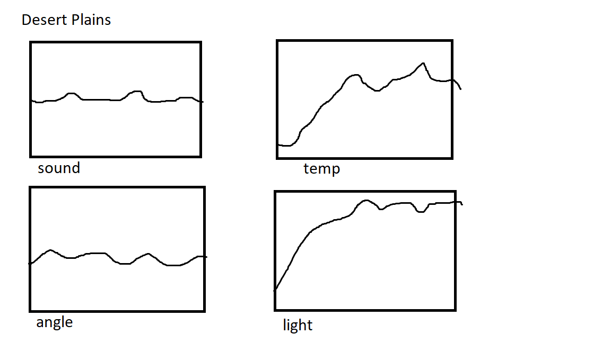
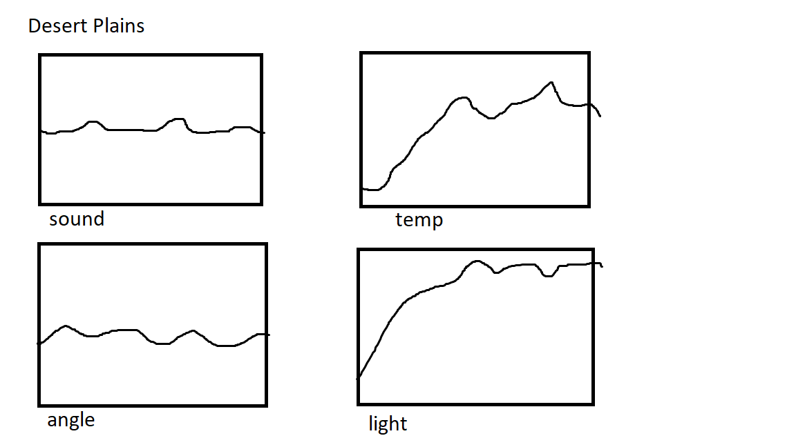

Portfolio
Home
Portfolio
About Me
This is my Portfolio Page!

My 1.1.9 Project: Nassim and Chelsea's Ice Cream Extravaganza.


This ice cream customizer allows you to choose up to three flavors: strawberry, chocolate, and vanilla, and cup or cone. It also calculates the cost of the ice cream and if the user chooses not to pay, they die. If they choose not to enter the establishment, they also die.
My 1.2.5 Project: Horse Race.
This horse race allows you to move your horse (pinkipie) against other horses with a timer and a red button you click when you are done.
My Scratch Project: Monkey Business.
This game allows you to move the monkey from left to right in order to collect as many bananas as possible. Avoid the apples and do not let any bananas drop!
Honey Graph Project
We used the groupby method and consolidating different files into the code to create a code that displayed data of honey production from all 50 states into graphs.
Rebellion Simulation.
We played with and analyzed a simulation that demonstrared a population of citizens (green circles) and rebels (red circles) being controlled by a police force (blue triangles).The more legitimate the government was, the less rebellion there was.
3.1.6 Rover Graph Project.
 

We made mock graphs based off the region descriptions of temperature, light, sound, and angles (gyroscope) and whichever mock graph matched the actual graph the best, we chose as our final region. Desert Plains matched the best because the high constant sound best matched the mystery graph.
Interactive Fiction Rags to Riches.